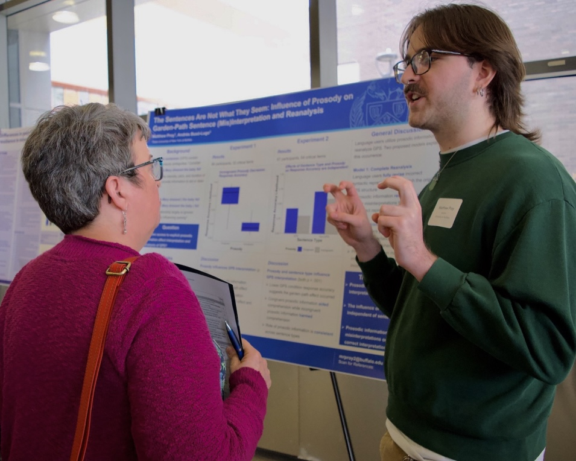

About Me

Hello! My name is Matthew and I graduated from the University of Buffalo in 2025 with a degree in Philosophy and Psychology. I'm a post-bacc researcher and lab manager working with Dr. Peter Pfordresher in the Auditory Perception and Action Lab, and Dr. Andrés Buxó-Lugo in the Language Processing and Computation Lab.
The foci of my research is a mix of psycholinguistics, music cognition, and the metaphysics of science. Such interests respectively cover topics related to:
- Prosodic and syntactic parsing
- Context-based factors for vocal production
- Causation and the nature of mental qualia
For a more detailed view of my current work, visit the Research tab.